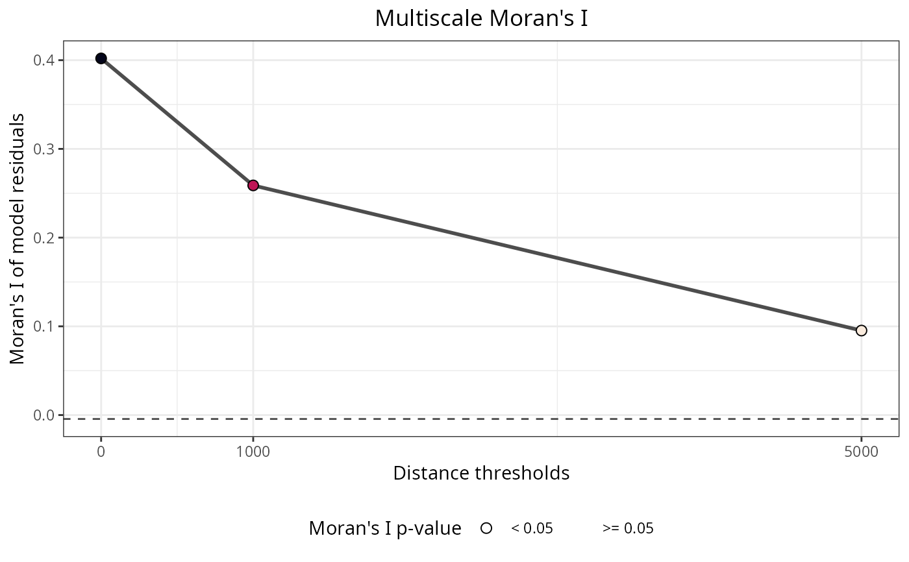
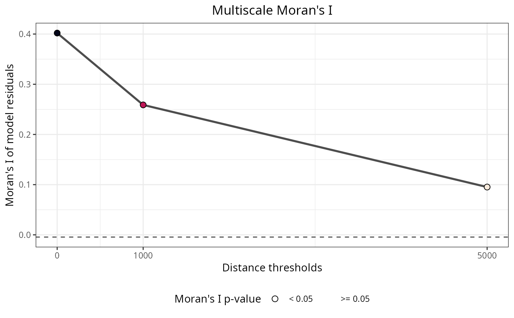

Moran's I test across multiple distance thresholds
Source:R/moran_multithreshold.R
moran_multithreshold.RdComputes Moran's I at multiple distance thresholds to assess spatial autocorrelation across different neighborhood scales. Identifies the distance threshold with the strongest spatial autocorrelation.
Usage
moran_multithreshold(
x = NULL,
distance.matrix = NULL,
distance.thresholds = NULL,
verbose = TRUE
)Arguments
- x
Numeric vector to test for spatial autocorrelation. Typically model residuals or a response variable.
- distance.matrix
Numeric distance matrix between observations. Must have the same number of rows as the length of
x.- distance.thresholds
Numeric vector of distance thresholds defining different neighborhood scales. Each threshold specifies the maximum distance for spatial neighbors at that scale. Default:
NULL(automatically computed withdefault_distance_thresholds()).- verbose
Logical. If
TRUE, displays a plot of Moran's I values across distance thresholds. Default:TRUE.
Value
List with four elements:
per.distance: Data frame with one row per distance threshold, containing columns:distance.threshold: Distance threshold usedmoran.i: Observed Moran's I statisticmoran.i.null: Expected Moran's I under null hypothesisp.value: Two-tailed p-valueinterpretation: Text interpretation of the result
plot: ggplot object showing how Moran's I varies across distance thresholds, highlighting significant results.max.moran: Numeric value of the maximum Moran's I observed across all thresholds.max.moran.distance.threshold: Distance threshold (in distance matrix units) where Moran's I is maximized.
Details
This function applies moran() at multiple distance thresholds to explore spatial autocorrelation at different spatial scales. This multi-scale approach is valuable for several reasons:
Scale exploration: Different processes may operate at different spatial scales. Testing multiple thresholds reveals the scale(s) at which spatial autocorrelation is strongest.
Optimal neighborhood definition: Identifies the distance threshold that best captures the spatial structure in the data.
Uncertainty assessment: Spatial neighborhoods are often uncertain in ecological and spatial data. Testing multiple thresholds accounts for this uncertainty.
Interpreting results:
The plot shows Moran's I values across distance thresholds. Peaks in Moran's I indicate spatial scales where autocorrelation is strongest. The max.moran and max.moran.distance.threshold values identify the optimal scale. Significant results (p ≤ 0.05) indicate spatial autocorrelation at that particular scale.
This function is commonly used to:
Detect spatial autocorrelation in model residuals at multiple scales
Determine appropriate distance thresholds for generating spatial predictors with
mem_multithreshold()Assess whether spatial patterns vary across scales
See also
moran(), mem_multithreshold(), default_distance_thresholds(), get_moran()
Other spatial_analysis:
filter_spatial_predictors(),
mem(),
mem_multithreshold(),
moran(),
pca(),
pca_multithreshold(),
rank_spatial_predictors(),
residuals_diagnostics(),
residuals_test(),
select_spatial_predictors_recursive(),
select_spatial_predictors_sequential()
Examples
data(plants_df, plants_distance, plants_response)
# Test spatial autocorrelation at multiple distance thresholds
moran_multi <- moran_multithreshold(
x = plants_df[[plants_response]],
distance.matrix = plants_distance,
distance.thresholds = c(0, 1000, 5000)
)
 # View results for all thresholds
moran_multi$per.distance
#> distance.threshold moran.i moran.i.null p.value
#> 1 0 0.40198062 -0.004424779 0
#> 2 1000 0.25884324 -0.004424779 0
#> 3 5000 0.09523306 -0.004424779 0
#> interpretation
#> 1 Positive spatial correlation
#> 2 Positive spatial correlation
#> 3 Positive spatial correlation
# Find optimal distance threshold
moran_multi$max.moran.distance.threshold
#> [1] 0
moran_multi$max.moran
#> [1] 0.4019806
# Plot shows spatial autocorrelation across scales
moran_multi$plot

# View results for all thresholds
moran_multi$per.distance
#> distance.threshold moran.i moran.i.null p.value
#> 1 0 0.40198062 -0.004424779 0
#> 2 1000 0.25884324 -0.004424779 0
#> 3 5000 0.09523306 -0.004424779 0
#> interpretation
#> 1 Positive spatial correlation
#> 2 Positive spatial correlation
#> 3 Positive spatial correlation
# Find optimal distance threshold
moran_multi$max.moran.distance.threshold
#> [1] 0
moran_multi$max.moran
#> [1] 0.4019806
# Plot shows spatial autocorrelation across scales
moran_multi$plot
